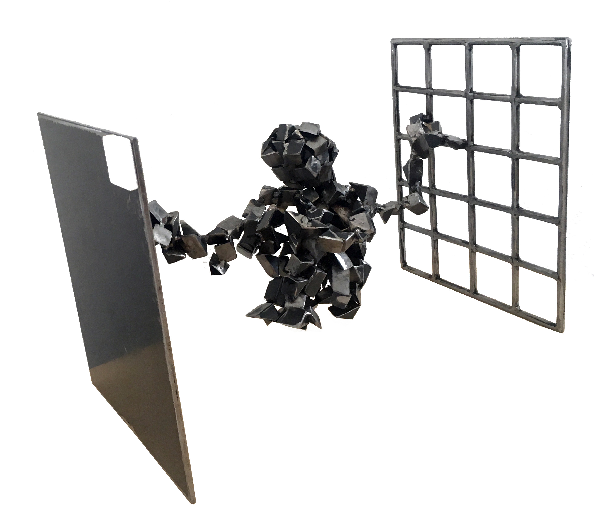
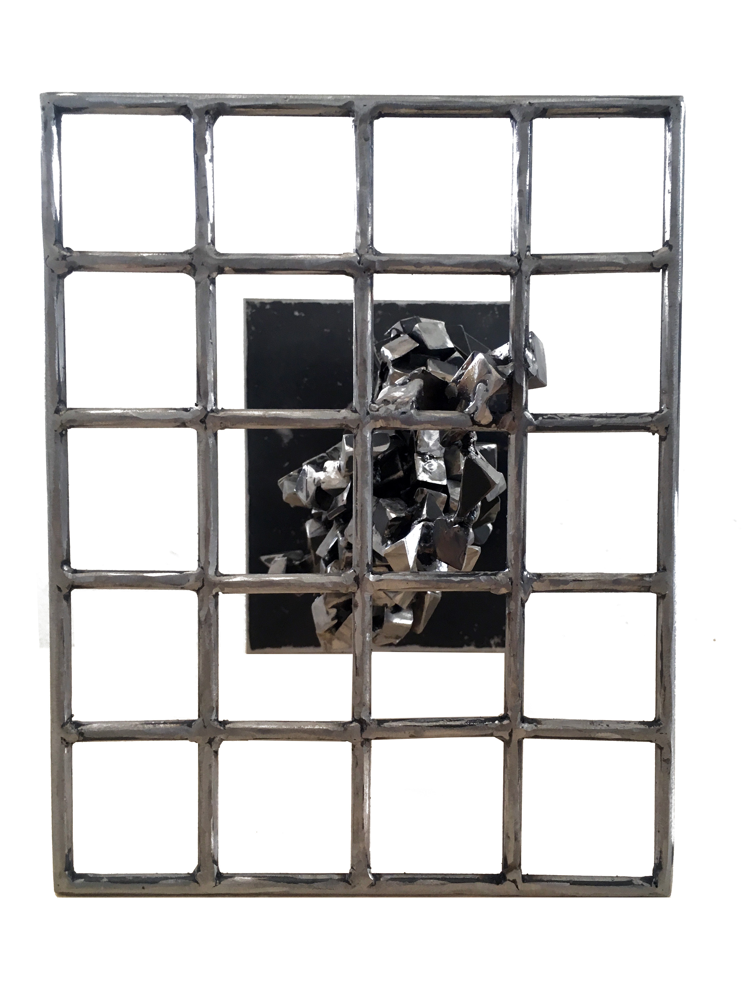

Entre les deux miroirs se faisant face se forme l’infini, un lieu/non-lieu, comme une faille, une ouverture dans l’espace-temps qui interroge l’essence-même de celui-ci, sa non-linéarité et les différentes strates de réalités.
Encadré par deux représentations géométriques ordonnées se crée ainsi un espace où nait le sens de la responsabilité de ce qui y sera placé à l’intérieur, projeté dans cette réflexion infinie.
Images:

